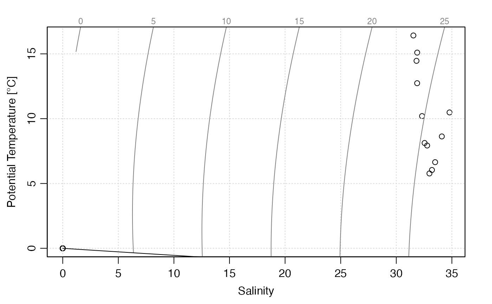
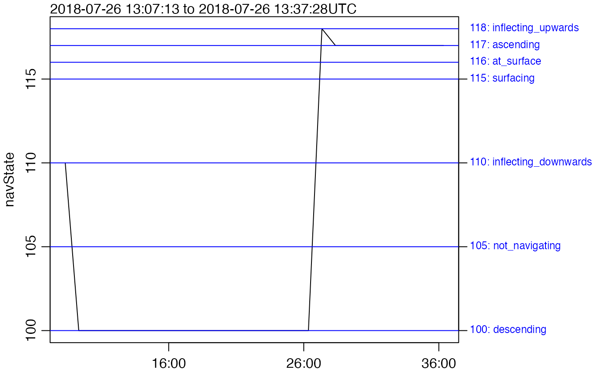
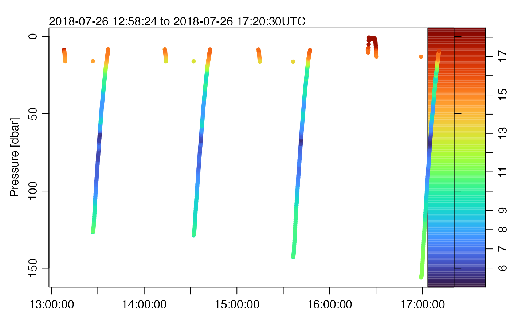
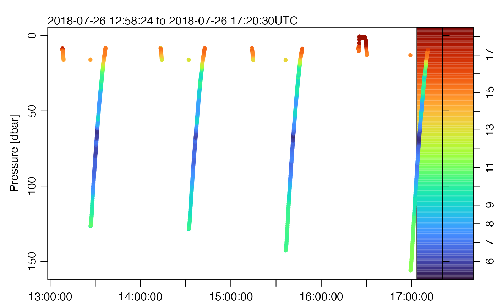

This is a limited function that is intended for quick views of a dataset. More serious analysis is best done by extracting data and using whatever graphical methods best suit the task at hand.
# S4 method for glider
plot(x, which, col = 1, colorby = NULL, colorbylim, debug, ...)Arguments
- x
A
gliderobject, i.e. one inheriting from glider.- which
either an integer or character value specifying which style is to be used; see “Details”.
- col
colour to be used for lines or characters. Note that if
colorbyis provided, then it will be used for point plots, instead ofcol.- colorby
character value, ignored for line plots, that names a data variable to be indicated on the plot through the colourization of individual plotted points (i.e.
type="p"must be governing the plot forcolorbyto have an effect). For example, a form of a temperature section plot can be created by plotting glider depth versus time, coloured by temperature. For reference, a colour palette (usingoceColorsTurbo()is displayed to the right of the plot. See Example 3.- colorbylim
optional value, used only if
colorbyis provided, to set the limits of the colorizing limits. It does this by being provided as thezlimargument tocolormap().- debug
an integer specifying whether debugging information is to be printed during processing. If this is not provided, then the value of
getOption("gliderDebug",0)is used. The printing is done by a call togliderDebug. Settingdebug=0turns off this form of debugging, while higher values may yield more information, depending on the function. If onegliderfunction calls another, it passes the value ofdebugbut decreased by 1, which means that the value ofdebugcontrols not just the breadth of debugging, but also the depth.- ...
ignored.
Details
The form of the plot is set by the which argument, as follows.
which=0orwhich="map": plot a map of sampling locations. This can be quite slow with the default plot type (using points), so you may find it helpful to useplot(g, type="l")to get a quick plot. If you want to change the view, e.g. expanding it so coastline are visible, start by drawing a coastline using the oce package, and then add dots withpoints(g[["longitude"]], g[["latitude"]]or similar. This method is more flexible than the presentplot()function.which=1orwhich="p": time-series plot of pressure, produced withoce::oce.plot.ts().which=2orwhich="T": time-series plot of temperature , produced withoce::oce.plot.ts().which=3orwhich="S": time-series plot of salinity, produced withoce::oce.plot.ts().which=4orwhich="TS": temperature-salinity diagram, with dots for data produced withoce::plotTS().which=5orwhich="navState": ignored except for seaexplorer data, this means to plot a time-series of the navigation state, stored as thenavStateitem within thepayload1element of thedataslot. The meanings of thenavStatevalues forseaexplorerdata are:105: glider is not navigating yet115: glider is surfacing, with ballast and centre of gravity being adjusted to put antenna out of the water116: glider is at the surface, acquiring a GPS signal, and communicating110: ballast and centre of mass are adjusted to cause glider to inflect downward100: ballast is in diving position; adjustments may be made to adjust pitch and heading118: target depth or altitude has been achieved, so ballast and centre of mass are adjusted to inflect glider upwards117: glider is ascending, with controls being adjusted for desired pitch and heading
Lines and notes in the plot border indicate these states, both numerically and with phrases, as inferred by
navStateCodes().
Examples
library(oceglider)
# Example 1: various plot types
dirRealtime <- system.file("extdata/seaexplorer/sub", package="oceglider")
gr <- read.glider.seaexplorer.realtime(dirRealtime, yo=100)
plot(gr, which="p")
plot(gr, which="S")
plot(gr, which="T")
plot(gr, which="TS")

plot(gr, which="map")
plot(gr, which="navState")

# Example 2: colour-code p by chlorophyll
plot(gr, which="p", type="p", colorby="chlorophyll", pch=20, cex=2)
 # Example 3: navState and pressure history of some delayed-mode yos,
# from a deployment in which sampling was supposed to be
# suppressed during the descending phases of motion.
dirRaw <- system.file("extdata/seaexplorer/raw", package="oceglider")
gd <- read.glider.seaexplorer.delayed(dirRaw)
plot(gd, which="navState")
# Example 3: navState and pressure history of some delayed-mode yos,
# from a deployment in which sampling was supposed to be
# suppressed during the descending phases of motion.
dirRaw <- system.file("extdata/seaexplorer/raw", package="oceglider")
gd <- read.glider.seaexplorer.delayed(dirRaw)
plot(gd, which="navState")
 # Example 4: colourizing by temperature, with fine-grained control.
cm <- colormap(gd[["temperature"]], col=oceColorsTurbo)
par(mar=c(2, 3.5, 2, 4))
drawPalette(colormap=cm)
plot(gd, which="p", type="p", col=cm$zcol, mar=c(2, 3.5, 2, 4), pch=20)

# Example 4: colourizing by temperature, with fine-grained control.
cm <- colormap(gd[["temperature"]], col=oceColorsTurbo)
par(mar=c(2, 3.5, 2, 4))
drawPalette(colormap=cm)
plot(gd, which="p", type="p", col=cm$zcol, mar=c(2, 3.5, 2, 4), pch=20)
